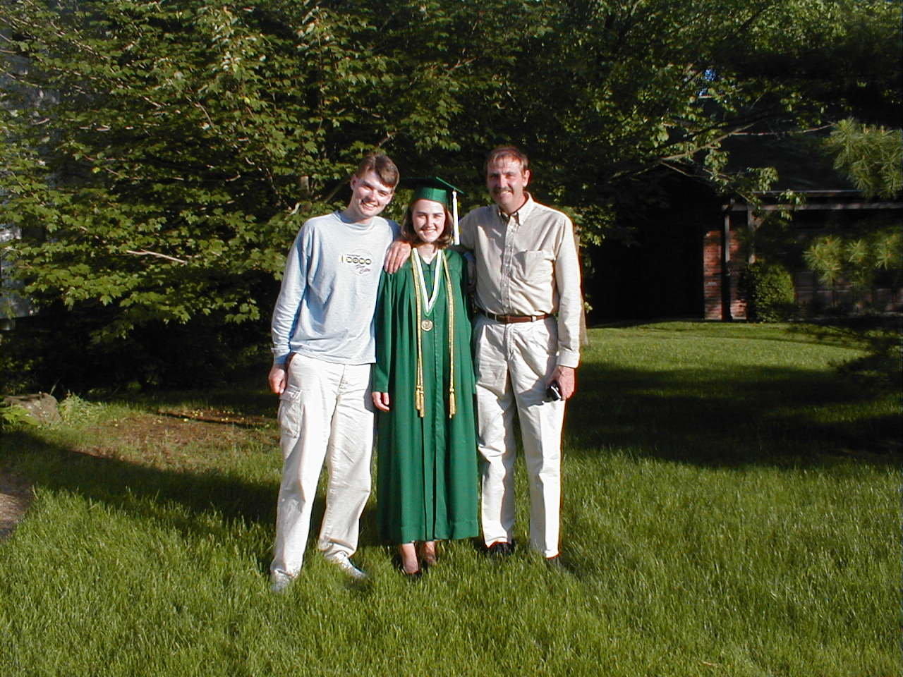

Day 20: June 1, (Indianapolis)Previous Day - Home - Next Day Photo of the DayLauren in her graduation robes with two cool biker dudes. Keegan's LogDay 20: June 1, (Indianapolis) Weather: Cool, Partly cloudy, Some rainToday was hectic for dad and I because we only had one day at home, but Lauren's graduation went very well. This morning we made some last minute preparations, I went out shopping for a present while dad finished setting up the mahogany canopy bed, his gift to her. Aunt Lissa, Molly, Aunt Linda, Uncle Dan, Jake, and Therese all came for the graduation festivities, we sat down to a home-cooked banquet at 6:00. Lauren donned her green robes, complete with a National Honors Society medallion and bronze cords for graduating Cum Laude, and we took pictures before sending her off. The ceremonies began at 8:00, due to the poor sound system we missed most of the speeches, but we did watch as Lauren walked across the stage and received her high school diploma, capping her 12 year stay with the Zionsville schools. Afterward we had cake and gave Lauren her gifts. Bed didn't come until late, after I had finished my laundry and talked with Holly on the phone. Today the group rode form Liberal, KS to Dodge City, KS. Here's hoping everyone is safe, and that we didn't miss any tailwinds! Phil's LogOn vacation with Phil... |
{kind=link}